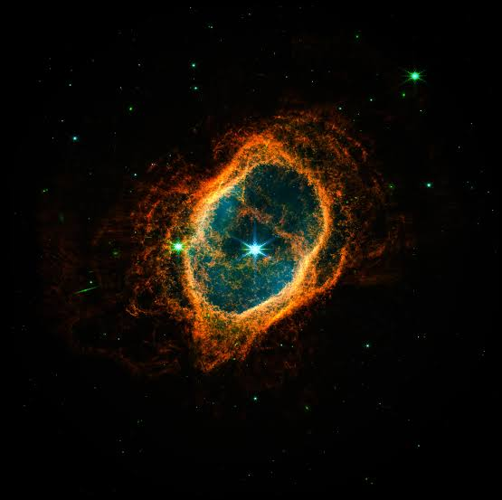
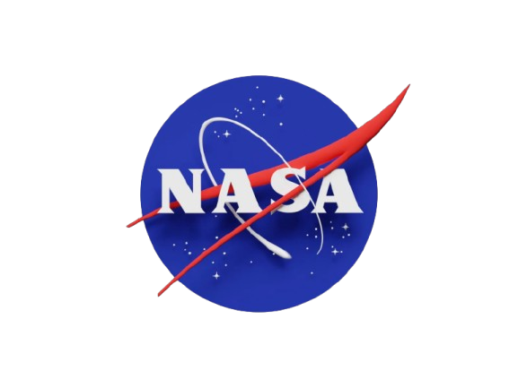

História da astronomia
A Astronomia é a ciência mais antiga da humanidade. Desde os tempos antigos, quando nossos ancestrais usavam os astros para saber a hora de plantar e colher, até a era moderna dos telescópios espaciais, o universo nunca deixou de nos fascinar. A palavra Astronomia vem do grego antigo e surge da junção de dois termos: astron, que significa "estrela" ou "corpo celeste", e nomos, que significa "lei" ou "regra". Ou seja, em sua origem, a Astronomia é literalmente "a lei das estrelas"— a ciência dedicada a estudar as regras que regem os planetas, galáxias, cometas e tudo o que habita o universo.
NASA
Se você gosta de exploração espacial, com certeza já ouviu o nome Nasa (National Aeronautics and Space Administration). Criada em 1958 pelos Estados Unidos durante a famosa "Corrida Espacial" com a União Soviética, a agência nasceu com o objetivo de dominar os céus e expandir as fronteiras do conhecimento humano.
De lá para cá, a NASA protagonizou momentos que mudaram a história para sempre — como levar o primeiro homem à Lua com a missão Apollo 11, em 1969

identidade visual da NASA é famosa no mundo todo. Seu símbolo mais conhecido, apelidado carinhosamente de "Meatball" (bolinha de carne), representa uma esfera azul com estrelas, uma órbita espacial e uma asa vermelha que simboliza a aeronáutica. O design foi pensado para transmitir a ideia de exploração do desconhecido e inovação tecnológica em um único olhar.

Com a criação de novos telescópios e sondas espaciais, a agência continua revelando detalhes impressionantes sobre a origem do universo e a busca por vida em outros planetas. Abaixo, você pode conferir um pouco mais sobre essa incrível jornada de descobertas espaciais: